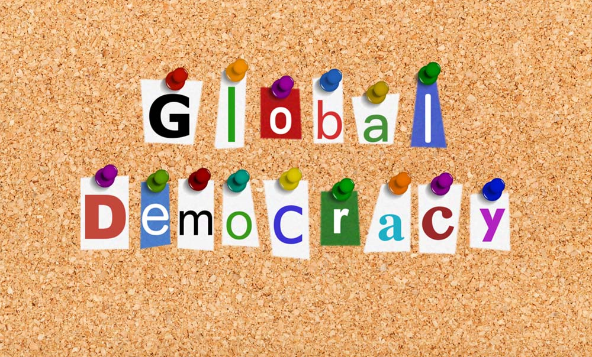

In a Democracy it is important that the decision on any public issue, be made by a community at the appropriate level. For example; local, regional, national, continental or global. It is imperative that at each level decision on a particular matter should be decided on the specific considerations that are relevant to each, not on the basis of power games.The all-embracing range of nation-states is a very undesirable concentration of power. The concerns of each nation-state are all framed and evaluate public policy in terms of their community, with only the slightest concern for other communities. In an era where almost all our most urgent problems can be understood and resolved only on a global scale, we have to look to decision making bodies on each matter in terms of its own nature. Some of those urgent problems are international but most of them are not a matter that is of national communities, but must be approached on a global perspective – global change, overpopulation, the world Ecology, and many other matters effect us not as citizens of the state, but as citizens of the world.
Nation states used to be self-sufficient. That is no longer the case. And nobody worried about the earth as global.
It would be very dangerous to think we can treat this new situation simply on the Federal model in which states hand over some matters to a superior body that met their common needs, by concentrating all the power for dealing with those problems in a single government. Federal powers are inevitably repressive of their constituents in many respects. People rightly fear the likely effects on a world state.
There is an alternative model – a central departure – from current assumptions, is to abandon the idea that everybody in a community should have an equal say on every matter of public concern. Certainly there are many matters in which there is solid ground for strict equality, but what is more often the case is that some important matters can be dealt with best by the those who are most affected either favourably or unfavourably by the activity in question.
We are all likely to fall victims of simplistic ideas where we have no serious interest in, or experience of a certain field that needs regulation. We live in a very complex and rapidly changing world. Inevitably on many matters we have to rely on others to make good decisions. We need to maximise the good decisions rather than insist on having a say in everything.
There is no substitute for real interest and experience, to decide on the basis of realistic and comprehensive inquiry.
I have always advocated that the inquiries that make the crucial decisions on a particular matter should be volunteers who are prepared to do the hard work of assessing the relevant evidence, not to endorse what the media claim to be popular opinion.
I do believe that in a polity where people generally are inclined to serious moral conversation, there will be a strong pressure on those selected by lot from volunteers, to attempt to give due weight to all the relevant considerations in the particular circumstances and that the public overall will accept such a decision as their best hope.
As I said in my “confessions” post, I believe that people have come to be much more realistically moral, and that they will endorse the best decision rather than just pushing their own views.
Such a decision should be enforced by shame without any need for punishment, such as fines or imprisonment. In some cases it may be appropriate for other institutions to boycott the recalcitrant.
People should regard the proposal they support, not as uniquely correct or desirable but as an experiment that will teach us all, even if it fails.
Hi John,
so what do you envisage for, say, plastics in the ocean, which is something I definitely see as a major environmental problem. The oceans are a classic global public good, and the waste flowing into it is classic free-rider behaviour. Curtailing that free-rider behaviour is going to take some threat of real punishment, which usually means a global police of some sort (whether agreed to by a federation of states or something else).
There is not much of a community of 'directly affected' because practically no-one lives in the oceans. Rather, the plastic is bad for lots of food chains, including ours, so we are all affected negatively a little bit, but not enough for individuals to pay much attention.
My favoured solution for this is to have a coalition of the willing on the funding side, and various groups of engineers on the clean-up side who try different technologies. So 'my' solution is for the willing to just forge ahead and try to implement solutions, perhaps even some punishment. Is that what you have in mind too?
This is utterly repulsive.
Global police, excluding people from effectively "voting" because they're so ignorant, don't you know, controlling people with force because they always choose so wrongly ...
Why do the left always dream of totalitarianism as their only real solution ? Such moral vanity ... I've always suspected this is actually some manifestation of malicious envy.
Who decides who ? PF calls it a group of the willing - but who decides what it is that is willed, and then who is the most willing ?
Plastics in the ocean ? The major river sources for this are already well and truly mapped. Adding some global enforcement army won't change that. Developing better targeted biodegradeable materials will have real impact and since a market for that already exists, a "coalition of willing" already exists.
The Swiss system of democracy is much preferred to global imposition of some fantasised global rule.
Thanks Ianl
We love people flying off the handle here, especially with some good old ideological red meat thrown in.
Paul Re “ abandon the idea that everybody in a community should have an equal say on every matter of public concern.” Is that really a departure from the current situation?